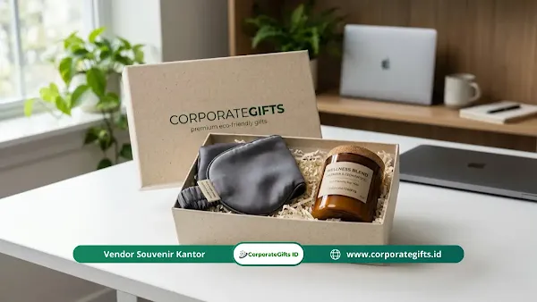

Corporate Gifts ID - Checklist planning corporate gift Q2 adalah daftar langkah terstruktur untuk merencanakan pemberian hadiah perusahaan pada kuartal kedua (April-Juni), mulai dari menetapkan tujuan, menyusun anggaran, memahami regulasi pajak natura, memilih hadiah, mengatur pengiriman, hingga mengukur hasilnya, agar program hadiah untuk klien dan karyawan tepat sasaran, efisien secara biaya, dan patuh pada aturan perundang-undangan.
Kuartal kedua dalam kalender korporat sering kali bertepatan dengan momentum penutupan evaluasi semester pertama, agenda tahunan seperti Hari Raya Idulfitri, perayaan Hari Kartini, hingga persiapan rapat kerja tengah tahun. Tanpa jadwal perencanaan yang rapi, divisi HR, Marketing, dan General Affairs kerap menghadapi situasi panik akibat keterlambatan vendor, biaya ekspedisi membengkak, atau pemilihan suvenir yang asal-asalan.
Panduan komprehensif ini menyajikan kerangka kerja checklist 6 langkah praktis, strategi alokasi anggaran, panduan pajak natura sesuai PMK No. 66 Tahun 2023, hingga formula pengukuran return on investment (ROI) program gifting Anda.
Poin Kunci Checklist Planning Q2:
- Perencanaan Mundur: Mulai persiapan 4-6 minggu sebelum awal April untuk mengamankan slot produksi dan harga bahan baku.
- Segmentasi Penerima: Pisahkan objektif retensi mitra bisnis VIP dengan program penghargaan retensi talenta internal.
- Kepatuhan Fiskal PMK 66/2023: Pahami batasan bebas pajak natura (non-objek PPh) untuk bingkisan keagamaan dan hadiah karyawan.
- Kemasan Ekologis Berkelanjutan: Terapkan prinsip kemasan bebas plastik sekali pakai untuk memperkuat citra ESG perusahaan.
- Evaluasi Berbasis Data: Pantau metrik repeat order klien, eNPS karyawan, dan cost per impression untuk menilai keberhasilan program.
Apa Saja Langkah Checklist Planning Corporate Gift Q2?
Terdapat enam tahapan utama yang wajib dilalui secara berurutan agar pengadaan corporate gift berjalan lancar tanpa kendala teknis dari awal April hingga penutupan Juni:
- Tetapkan tujuan dan profil penerima: Tentukan apakah fokus program ditujukan untuk retensi klien utama, konversi prospek bisnis baru, atau peningkatan moral kerja tim.
- Susun alokasi anggaran rinci: Pisahkan biaya produk utama, ongkos kustomisasi logo, kemasan khusus, logistik pengiriman, serta cadangan pajak sejak awal.
- Pahami regulasi pajak natura: Verifikasi batas nilai bingkisan dan kelengkapan dokumen administratif sebelum menandatangani kontrak pemesanan.
- Kurasi hadiah relevan dan bernilai: Pilih barang yang memiliki nilai pakai tinggi dalam rutinitas harian serta mencerminkan karakter profesional brand Anda.
- Atur manajemen kemasan dan logistik: Kumpulkan data alamat penerima secara terpusat, pilih ekspedisi dengan jaminan SLA, dan rancang unboxing experience yang berkesan.
- Evaluasi dan ukur hasil: Pantau respons penerima, perpanjangan kontrak, serta tingkat kepuasan karyawan untuk perbaikan siklus pengadaan berikutnya.
Tujuan dan Sasaran Corporate Gift Q2: Klien & Karyawan
Menentukan tujuan strategis adalah fondasi utama program gifting. Memahami Fungsi Corporate Gift Q2 membantu tim memetakan prioritas secara proporsional antara kebutuhan eksternal dan internal:
Tujuan Eksternal: Klien dan Prospek Strategis
Pemberian hadiah kuartal kedua berfungsi mempertahankan hubungan bisnis yang sudah terjalin sekaligus membuka peluang kerja sama baru di paruh kedua tahun berjalan:
- Diferensiasi Pasar Kompetitif: Hadiah fisik yang dikurasi secara personal menciptakan impresi mendalam yang membedakan korporat Anda dari para kompetitor industri.
- Katalisator Keputusan Bisnis: Bentuk apresiasi yang datang pada momen krusial membantu membangun rasa saling percaya dan mempercepat finalisasi kesepakatan kontrak besar.
Tujuan Internal: Apresiasi Karyawan dan Retensi Talenta
Di sisi internal, merumuskan target corporate gift tengah tahun berperan menjaga kestabilan moral tim:
- Memperkuat Keterikatan Tim (Team Engagement): Bingkisan apresiasi tengah tahun menjadi bentuk pengakuan konkret atas dedikasi dan kerja keras karyawan selama semester pertama.
- Dampak Psikologis Positif: Karyawan yang merasa dihargai secara personal cenderung memiliki motivasi kerja yang lebih tinggi dan tingkat retensi yang lebih stabil.
Alokasi Anggaran dan Aturan Pajak Natura PMK 66/2023
Tidak ada rumus tunggal untuk besaran anggaran corporate gift. Sebagai patokan umum, perusahaan biasanya mengalokasikan 2-5% dari pos anggaran promosi atau alokasi kesejahteraan karyawan. Pemecahan pos anggaran yang terstruktur mencegah terjadinya pembengkakan biaya di menit-menit akhir pengiriman.
| Pos Alokasi Anggaran | Persentase Ideal | Ketentuan Pajak (PMK 66/2023) | Catatan Kunci Pengadaan |
|---|---|---|---|
| Produk Utama & Kustomisasi | 60% - 70% | Objek PPh jika bingkisan non-hari raya > Rp3 juta/karyawan/tahun | Pilih material berkualitas tahan lama dan teknik grafir rapi. |
| Kemasan Eksklusif & Branding | 15% - 20% | Termasuk komponen biaya natura perusahaan | Gunakan material ramah lingkungan bersertifikasi FSC atau daur ulang. |
| Logistik & Distribusi Multi-Kota | 10% - 15% | Biaya operasional resmi B2B (PPh 23 jasa kurir) | Wajib asuransi pengiriman untuk paket berisiko pecah atau bernilai tinggi. |
| Dana Cadangan & Administrasi | 5% | Faktur pajak PPN 11% resmi perusahaan | Mengantisipasi perubahan alamat penerima atau penambahan kuota VIP. |
Berdasarkan PMK Nomor 66 Tahun 2023 yang mengatur perlakuan pajak atas natura dan kenikmatan, terdapat ketentuan penting yang wajib dipahami tim pengadaan:
- Bingkisan Hari Raya Keagamaan: Bingkisan yang diberikan pada Hari Raya Idulfitri, Natal, Nyepi, Waisak, atau Imlek (misalnya makanan dan minuman) dikecualikan sepenuhnya dari objek PPh karyawan tanpa batasan nominal, selama diterima oleh seluruh pegawai secara merata.
- Bingkisan di Luar Momen Hari Raya: Dikecualikan dari objek PPh hingga batas kumulatif Rp3.000.000 per pegawai per tahun pajak. Kelebihan nilai di atas batas tersebut wajib dipotong PPh Pasal 21 oleh perusahaan.
- Hadiah untuk Klien Bisnis: Hadiah kepada relasi bisnis eksternal dapat diakui sebagai biaya pengurang penghasilan bruto (deductible expense) perusahaan selama dibuatkan Daftar Nominatif yang memuat identitas lengkap penerima dan nilai bingkisan.

Kurasi hadiah premium ramah lingkungan dan alokasi anggaran bebas stres untuk Q2.
Kriteria Kurasi Hadiah Terbaik dan Elemen Digital
Hadiah yang tepat harus memadukan utilitas harian dengan kehangatan emosional. Tiga kategori kurasi yang paling diminati untuk kuartal kedua adalah:
- Kesehatan dan Relaksasi (Wellness): Paket aromaterapi diffuser, essential oil alami, atau sleep mask berbahan sutra mulberry sangat dihargai oleh pekerja dengan rutinitas padat di tengah tahun.
- Produk Artisan Lokal Ramah Lingkungan: Kerajinan buatan tangan pengrajin nusantara, seperti tas kanvas goni organik, keramik handmade, atau kopi specialty single origin, mendukung pemberdayaan UMKM lokal dan memperkuat nilai keberlanjutan.
- Artisan Food & Healthy Hampers: Cokelat artisan lokal, teh herbal organik, dan kudapan sehat bersertifikasi BPOM dan halal, yang dapat dinikmati bersama keluarga di momen silaturahmi.
Integrasi Elemen Digital Interaktif
Menambahkan sentuhan digital modern meningkatkan nilai interaksi tanpa memerlukan lonjakan anggaran produksi:
- Pesan Video Personalisasi: Sematkan kode QR pada kartu ucapan yang mengarahkan penerima ke tayangan video apresiasi dari jajaran direksi.
- Akses Belajar Digital: Voucher langganan platform kursus profesional atau e-book bisnis pilihan untuk mendukung pertumbuhan wawasan tim.
Eksekusi Logistik Pengiriman dan Desain Kemasan Sensori
Kualitas kemasan luar menentukan kesan pertama penerima sebelum menyentuh produk di dalamnya. Rancang unboxing narrative yang menggugah panca indra:
- Pengalaman Visual dan Taktil: Padukan hardbox bertekstur linen, pita satin beraksen warna korporat, dan shredded paper daur ulang untuk melindungi produk secara aman dan estetis.
- Story Card Otentik: Sisipkan kartu cerita yang menjelaskan filosofi produk, dedikasi pengrajin lokal, atau pesan keberlanjutan dari perusahaan Anda.
- Alur Logistik Mandiri: Manfaatkan form digital pengumpulan alamat agar penerima dapat mengisi data pengiriman secara mandiri, sehingga menjaga privasi data dan meminimalkan kesalahan kurir.
Cara Mengukur ROI dan Metrik Kesuksesan Corporate Gift Q2
Program corporate gifting profesional harus dapat dipertanggungjawabkan efektivitasnya secara analitis melalui indikator performa utama (KPI):
- Client Retention Rate: Amati persentase perpanjangan kontrak atau pemesanan ulang (repeat order) dari klien yang menerima bingkisan dibandingkan dengan kelompok kontrol.
- Employee Net Promoter Score (eNPS): Lakukan survei kepuasan singkat setelah distribusi hadiah untuk mengukur persepsi penghargaan karyawan terhadap perusahaan.
- Cost Per Impression (CPI): Bagi total pengeluaran program dengan frekuensi penggunaan barang (misal: tumbler atau tas kerja yang dipakai setiap hari), membuktikan efisiensi biaya dibanding iklan berbayar konvensional.
Pertanyaan Seputar Checklist Corporate Gift Q2 (FAQ)
Kesimpulan: Wujudkan Program Corporate Gift Q2 yang Terukur
Keberhasilan program corporate gift Q2 berakar pada perencanaan terstruktur, bukan sekadar kebiasaan seremonial tahunan. Dengan mengikuti checklist perencanaan di atas, perusahaan Anda dapat menetapkan tujuan yang tepat, mengendalikan anggaran, memastikan kepatuhan pajak PMK 66/2023, serta mengevaluasi dampak reputasi brand secara transparan.
Siapkan program gifting kuartal kedua Anda bersama mitra produksi berpengalaman. Jelajahi pilihan gift box dan hampers korporat di katalog CorporateGifts.ID, atau hubungi konsultan kami untuk simulasi penawaran resmi.

Ditulis oleh: Arinda Zakia
Senior Corporate Gifting SpecialistSpesialis kurasi merchandise dan souvenir korporat di CorporateGifts.ID. Berpengalaman lebih dari 7 tahun dalam menyusun paket corporate gift fungsional untuk instansi BUMN, kementerian, perbankan, dan perusahaan multinasional.
Lihat Profil Lengkap & Panduan Lainnya